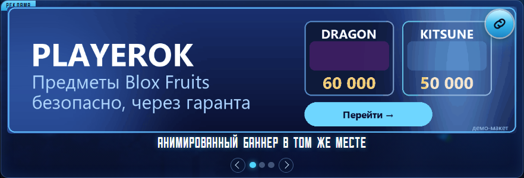

1 Карусель в постере главное место
Баннер стоит в середине тирлиста, между блоками с ценами — там, где человек и так задерживается взглядом. В одном месте показывается несколько баннеров: на компьютере они листаются стрелками, которые появляются при наведении, на телефоне — свайпом.
- Показывается всем: и на компьютере, и на телефоне
- Статика и анимация в одном месте
- Ничего не мигает и не переключается само — баннер стоит спокойно
- Попадает в PNG-постер, который владелец публикует в Telegram
- Клик по любой точке баннера ведёт на ваш сайт
1200 × 300 · до 400 КБ статика · до 900 КБ анимация
